A Besta: as animações novas contra as que estão no jogo
24/11. Em cada par, à esquerda (azul) está o clipe que já está no jogo e à direita (laranja) a candidata nova. Os dois aparecem no mesmo tamanho de tela (a escala da luta ×2, cada clipe pelo seu fator, com os pés na mesma linha), no tempo do jogo e sobre o escuro da F4. O velho roda duas vezes; o novo para um instante na pose de base antes e depois. Os vereditos "bom" da folha anterior estão retirados: eu julguei se ela continuava ela, e não o movimento comparado com o jogo.
1. Os pares
1. Salto para trás
jogo: o salto da entrada (11 q, 91 ms)novo: salto para trás (8 q, 90 ms)
O novo quase não sai da pose de base. São 8 quadros da mesma silhueta com um agachar de poucos pixels, e não se lê como salto.
O velho troca a silhueta inteira a cada quadro: abre, gira, encolhe e pousa.
2. A sede (abre os braços e devolve)
jogo: o urro (9 q, 133 ms)jogo: o arremesso de lava (15 q, 39 ms)novo: a sede (14 q, 110 ms)
Os braços viram dois bastões retos e compridos, mais longos que os da base, sem cotovelo e sem músculo. Abertos, parecem asas.
No tranco da devolução (10–12), os braços viram riscos horizontais borrados.
O core fica apagado e nenhum quadro acende. Nos velhos, a luz é o evento: o urro acende o peito e a lava acende o braço.
3. O coração para
jogo: o urro (o peito que acende)novo: o coração para (12 q, 110 ms)
Os braços perdem a carne vermelha e viram faixas claras de osso cruzando o peito. Ela parece enrolada em fitas, e o gesto de cravar as garras no core não se lê.
O core some: é o clipe com menos vermelho de todos (0,081).
4. Salto de parede a parede
jogo: o salto ao teto (17 q, 50 ms)novo: salto de parede (6 q, 100 ms)
Quatro dos seis quadros repetem a mesma pose esticada.
O corpo escurece (vermelho 0,048), o core some, as garras viram um leque claro e borrado e as pernas afinam.
O velho tem um gesto claro: o braço sobe e agarra.
5. Rastejar (e a escalada, que é ele girado)
jogo: o galope, da mesma base (15 q, 41 ms)novo: rastejar (8 q, 110 ms)
O quadro 1 tem uma mancha bege embaixo da barriga, um defeito que eu não tinha visto.
Os membros quase não se mexem. O galope velho, feito da mesma pose, move as patas de verdade.
Girado para a parede, isto não vai ler como escalada.
6. Golpe de canto
jogo: o golpe (15 q, 60 ms)novo: golpe de canto (7 q, 100 ms)
O braço que golpeia derrete numa mancha vermelha (2–4), e as garras continuam no chão. Parece um fantasma do braço, não o braço.
É lento e picotado: 7 quadros a 100 ms, contra 15 a 60 ms no velho, que ainda tem os arcos de fogo pintados com textura.
7. Troca de mão no teto
jogo: o balanço pendurado (11 q, 118 ms)novo: troca de mão, PixMiniMax (16 q, 100 ms)
As mãos viram punhos curtos com nós redondos (1–9) e perdem as garras longas, que são a marca dela.
Do quadro 10 em diante, a placa vira pelo e os braços viram osso. O "meio aproveitável" que escrevi não se sustenta.
8. Golpe pendurado
jogo: a lava pendurada (17 q, 65 ms)jogo: os arcos do golpe de chãonovo: golpe pendurado, PixMiniMax (8 q, 100 ms)
O arco é uma meia-lua vermelha lisa, de cor chapada e sem textura. Lê como vetor, ao contrário dos arcos de fogo texturizados do golpe de chão.
Aparecem bolas cinza no ombro (3–8) e um borrão cinza no quadro 4.
2. O que a comparação mostra
Amplitude: os clipes do jogo trocam a silhueta inteira; os novos quase não mudam. Posei com medo de quebrar o desenho, e o movimento saiu tímido.
Membro longe da base: quando o braço sai muito da pose de partida, o gerador o repinta como osso claro, bastão ou borrão (a sede, o coração, o canto, o teto). O esqueleto segura a cara e a placa, mas não segura os braços.
Cor e luz: os novos ficam com 5–12% de vermelho vivo, e os do jogo com 11–19%. Nenhum novo tem o core acendendo, e nos velhos a luz é parte do gesto.
Ritmo: os ataques do jogo têm 15–17 quadros a 40–65 ms. Os meus têm 6–8 quadros a 100 ms, então saem mais lentos e picotados.
3. As medidas
Por clipe, média dos quadros: altura em px virtuais (o quadro da luta, já corrigido pelo fator), vermelho vivo (a fração do corpo), brilho médio do corpo e cores distintas por quadro. Os números baixos dos novos estão em vermelho.
Clipe
Quadros
ms/quadro
Altura
Vermelho
Brilho
Cores
jogo: o salto da entrada
11
91
214
0,084
0,169
1890
jogo: o urro
9
133
245
0,107
0,225
59
jogo: a lava
15
39
249
0,163
0,202
64
jogo: o salto ao teto
17
50
294
0,130
0,184
574
jogo: o galope
15
41
217
0,127
0,182
64
jogo: o golpe
15
60
264
0,154
0,233
62
jogo: o rasgo
17
65
254
0,188
0,238
688
jogo: o balanço no teto
11
118
298
0,147
0,185
64
jogo: a lava pendurada
17
65
312
0,147
0,183
64
novo: salto para trás
8
90
244
0,117
0,185
61
novo: a sede
14
110
269
0,106
0,177
65
novo: o coração para
12
110
247
0,081
0,184
59
novo: salto de parede
6
100
205
0,048
0,161
56
novo: rastejar
8
110
208
0,099
0,172
49
novo: golpe de canto
7
100
209
0,092
0,168
51
novo: troca de mão no teto
16
100
246
0,146
0,181
51
novo: golpe pendurado
8
100
274
0,194
0,210
54
No golpe pendurado, o vermelho alto vem da meia-lua chapada, não do corpo. A troca de mão fica ~50 px mais baixa que o balanço porque as mãos-punho não chegam à altura das garras.
4. Todos os quadros
Os quadros em px virtuais (1:1 na escala da luta, sem ampliação), numerados. Nos novos, o 0 é a base de partida.
Salto para trás: novo / o salto da entrada / o giro
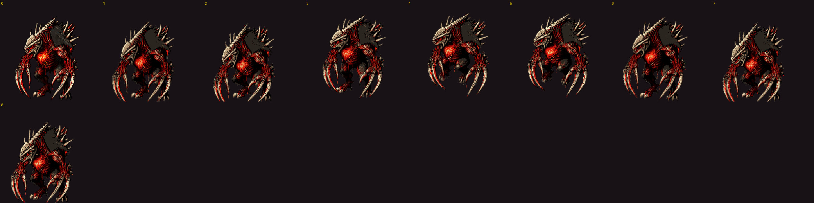
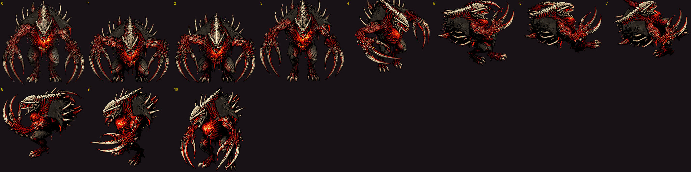
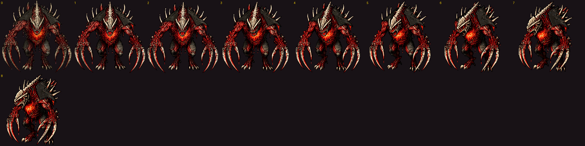
A sede: novo / o urro / a lava
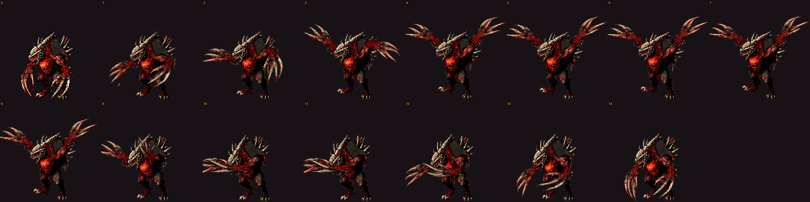
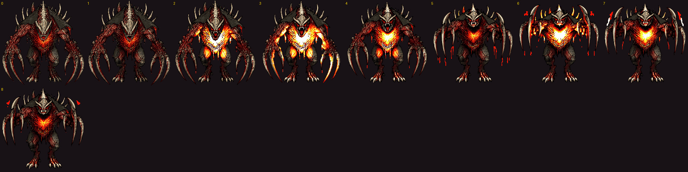
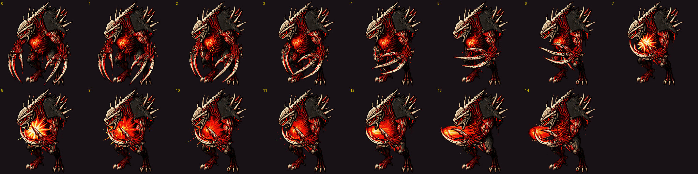
O coração para: novo / o urro
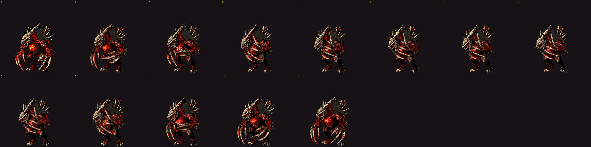
Salto de parede: novo / o salto ao teto
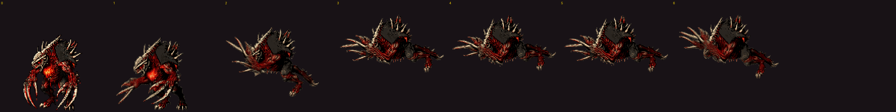
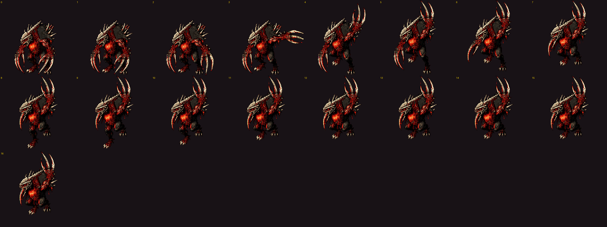
Rastejar: novo / o galope / o de quatro / o andar
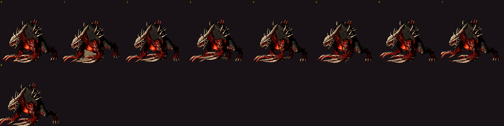
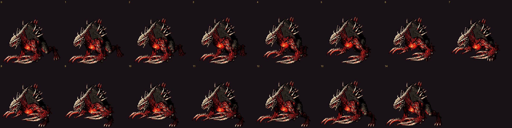
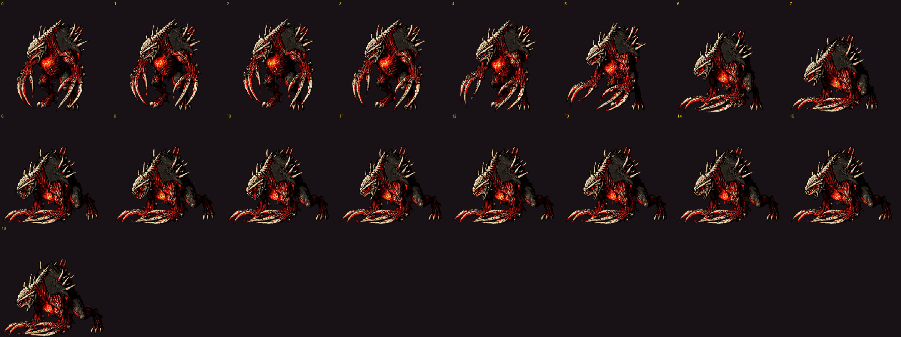
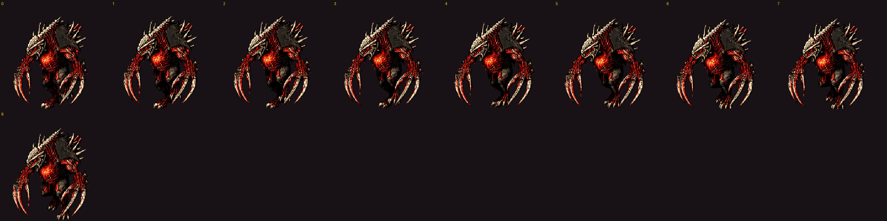
Golpe de canto: novo / o golpe / o rasgo
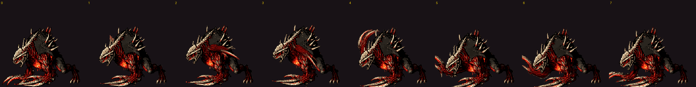
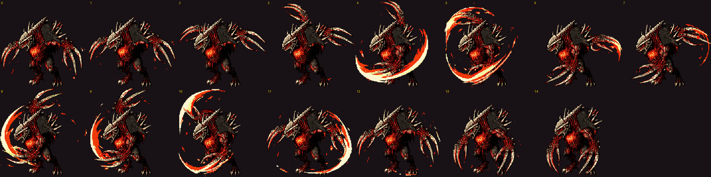
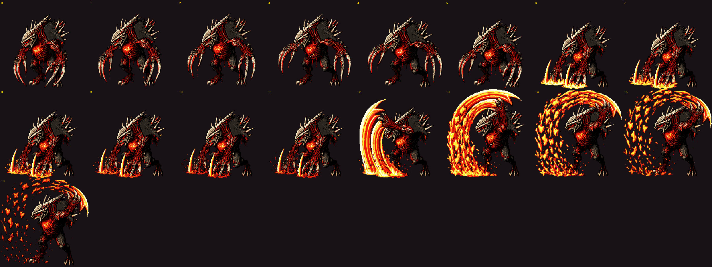
Troca de mão no teto: novo / o balanço
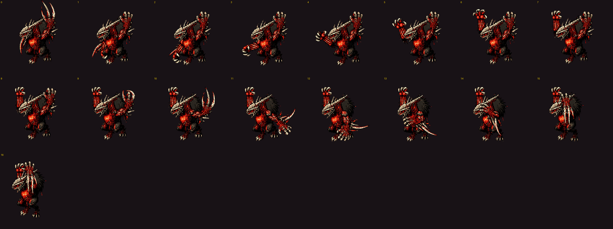
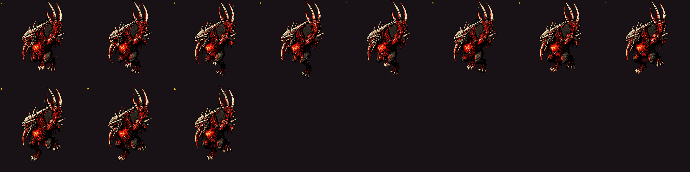
Golpe pendurado: novo / a lava pendurada
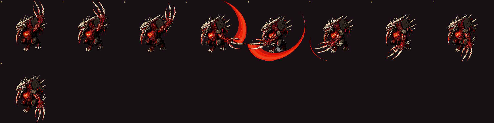
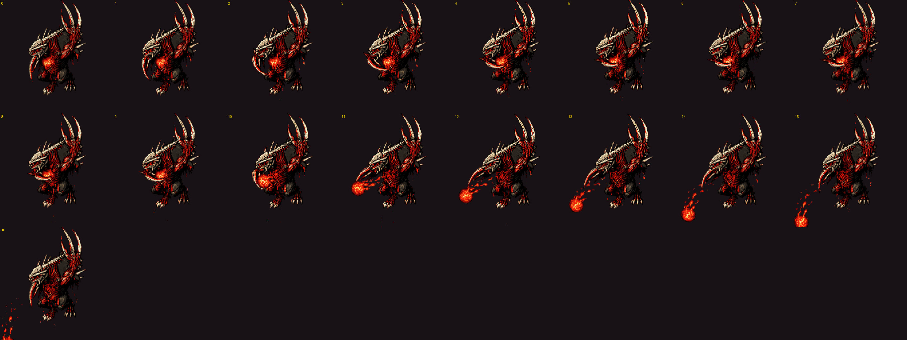
Gerada por ferramentas/comparar.py (lê public/sprites/predador-*-sheet.png com os quadros e tempos de Predador.ts, e as candidatas em cru/). As medidas cruas estão em comparar/medidas.json.